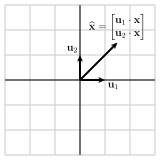

We are sometimes presented with a dataset having many data points that live in a high dimensional space. For instance, we looked at a dataset describing body fat index (BFI) in Activity 6.5.4 where each data point is six-dimensional. Developing an intuitive understanding of the data is hampered by the fact that it cannot be visualized.
This section explores a technique called principal component analysis, which enables us to reduce the dimension of a dataset so that it may be visualized or studied in a way so that interesting features more readily stand out. Our previous work with variance and the orthogonal diagonalization of symmetric matrices provides the key ideas.
Preview Activity7.3.1.
We will begin by recalling our earlier discussion of variance. Suppose we have a dataset that leads to the covariance matrix
Suppose that \(\uvec\) is a unit eigenvector of \(C\) with eigenvalue \(\lambda\text{.}\) What is the variance \(V_{\uvec}\) in the \(\uvec\) direction?
Find an orthogonal diagonalization of \(C\text{.}\)
What is the total variance?
In which direction is the variance greatest and what is the variance in this direction? If we project the data onto this line, how much variance is lost?
In which direction is the variance smallest and how is this direction related to the direction of maximum variance?
The total variance is the sum of the eigenvalues, \(V=\lambda_1 + \lambda_2 = 15 + 5 = 20\text{.}\)
The variance is greatest in the direction of the eigenvector associated to the largest eigenvalue. This direction is defined by \(\twovec{\frac{1}{\sqrt{5}}}{-\frac2{\sqrt{5}}}\text{,}\) and the variance is 15 in this direction.
The variance is smallest in the direction defined by \(\twovec{\frac2{\sqrt{5}}}{\frac1{\sqrt{5}}}\text{.}\)
Here are some ideas we’ve seen previously that will be particularly useful for us in this section. Remember that the covariance matrix of a dataset is \(C=\frac 1N AA^{\transpose}\) where \(A\) is the matrix of \(N\) demeaned data points.
When \(\uvec\) is a unit vector, the variance of the demeaned data after projecting onto the line defined by \(\uvec\) is given by the quadratic form \(V_{\uvec} =
\uvec\cdot(C\uvec)\text{.}\)
In particular, if \(\uvec\) is a unit eigenvector of \(C\) with associated eigenvalue \(\lambda\text{,}\) then \(V_{\uvec} = \lambda\text{.}\)
Moreover, variance is additive, as we recorded in Proposition 7.1.17: if \(W\) is a subspace having an orthonormal basis \(\uvec_1,\uvec_2,\ldots,\uvec_n\text{,}\) then the variance
Let’s begin by looking at an example that illustrates the central theme of this technique.
Activity7.3.2.
Suppose that we work with a dataset having 100 five-dimensional data points. The demeaned data matrix \(A\) is therefore \(5\by100\) and leads to the covariance matrix \(C=\frac1{100}~AA^{\transpose}\text{,}\) which is a \(5\by5\) matrix. Because \(C\) is symmetric, the Spectral Theorem tells us it is orthogonally diagonalizable so suppose that \(C = QDQ^{\transpose}\) where
What is \(V_{\uvec_2}\text{,}\) the variance in the \(\uvec_2\) direction?
Find the variance of the data projected onto the line defined by \(\uvec_4\text{.}\) What does this say about the data?
What is the total variance of the data?
Consider the 2-dimensional subspace spanned by \(\uvec_1\) and \(\uvec_2\text{.}\) If we project the data onto this subspace, what fraction of the total variance is represented by the variance of the projected data?
How does this question change if we project onto the 3-dimensional subspace spanned by \(\uvec_1\text{,}\)\(\uvec_2\text{,}\) and \(\uvec_3\text{?}\)
\(V_{\uvec_4} = \lambda_4 = 0\text{,}\) which tells us there is no variance in the \(\uvec_4\) direction. Therefore, when we project onto the line defined by \(\uvec_4\text{,}\) every data point projects to \(\zerovec\) so every data point is in the orthogonal complement of \(\uvec_4\text{.}\)
The variance of the data projected onto this subspace is \(13+10=23\text{,}\) which represents \(23/25=92\%\) of the variance.
Projecting onto this 3-dimensional subspace retains all of the variance.
All of the data lies in the \(3\)-dimensional subspace spanned by \(\uvec_1\text{,}\)\(\uvec_1\text{,}\) and \(\uvec_1\text{.}\)
This activity demonstrates how the eigenvalues of the covariance matrix can tell us when data are clustered around, or even wholly contained within, a smaller dimensional subspace. In particular, the original data is 5-dimensional, but we see that it actually lies in a 3-dimensional subspace of \(\real^5\text{.}\) Later in this section, we’ll see how to use this observation to work with the data as if it were three-dimensional, an idea known as dimensional reduction.
The eigenvectors \(\uvec_j\) of the covariance matrix are called principal components, and we will order them so that their associated eigenvalues decrease. Generally speaking, we hope that the first few principal components retain most of the variance, as the example in the activity demonstrates. In that example, we have the sequence of subspaces
\(W_1\text{,}\) the 1-dimensional subspace spanned by \(\uvec_1\text{,}\) which retains \(13/25 = 52\%\) of the total variance,
\(W_2\text{,}\) the 2-dimensional subspace spanned by \(\uvec_1\) and \(\uvec_2\text{,}\) which retains \(23/25
= 92\%\) of the variance, and
\(W_3\text{,}\) the 3-dimensional subspace spanned by \(\uvec_1\text{,}\)\(\uvec_2\text{,}\) and \(\uvec_3\text{,}\) which retains all of the variance.
Notice how we retain more of the total variance as we increase the dimension of the subspace onto which the data are projected. Eventually, projecting the data onto \(W_3\) retains all the variance, which tells us the data must lie in \(W_3\text{,}\) a smaller dimensional subspace of \(\real^5\text{.}\)
In fact, these subspaces are the best possible. We know that the first principal component \(\uvec_1\) is the eigenvector of \(C\) associated to the largest eigenvalue. This means that the variance is as large as possible in the \(\uvec_1\) direction. In other words, projecting onto any other line will retain a smaller amount of variance. Similarly, projecting onto any other 2-dimensional subspace besides \(W_2\) will retain less variance than projecting onto \(W_2\text{.}\) The principal components have the wonderful ability to pick out the best possible subspaces to retain as much variance as possible.
Of course, this is a contrived example. Typically, the presence of noise in a dataset means that we do not expect all the points to be wholly contained in a smaller dimensional subspace. In fact, the 2-dimensional subspace \(W_2\) retains \(92\%\) of the variance. Depending on the situation, we may want to write off the remaining \(8\%\) of the variance as noise in exchange for the convenience of working with a smaller dimensional subspace. As we’ll see later, we will seek a balance using a number of principal components large enough to retain most of the variance but small enough to be easy to work with.
Activity7.3.3.
We will work here with a dataset having 100 3-dimensional demeaned data points. Evaluating the following cell will plot those data points and define the demeaned data matrix A whose shape is \(3\by100\text{.}\)
Notice that the data appears to cluster around a plane though it does not seem to be wholly contained within that plane.
Use the matrix A to construct the covariance matrix \(C\text{.}\) Then determine the variance in the direction of \(\uvec=\threevec{1/3}{2/3}{2/3}\text{?}\)
Find the eigenvalues of \(C\) and determine the total variance.
Notice that Sage does not necessarily sort the eigenvalues in decreasing order.
Use the right_eigenmatrix() command to find the eigenvectors of \(C\text{.}\) Remembering that the Sage command B.column(1) retrieves the vector represented by the second column of B, define vectors u1, u2, and u3 representing the three principal components in order of decreasing eigenvalues. How can you check if these vectors are an orthonormal basis for \(\real^3\text{?}\)
What fraction of the total variance is retained by projecting the data onto \(W_1\text{,}\) the subspace spanned by \(\uvec_1\text{?}\) What fraction of the total variance is retained by projecting onto \(W_2\text{,}\) the subspace spanned by \(\uvec_1\) and \(\uvec_2\text{?}\) What fraction of the total variance do we lose by projecting onto \(W_2\text{?}\)
If we project a data point \(\xvec\) onto \(W_2\text{,}\) the Projection Formula tells us we obtain
Rather than viewing the projected data in \(\real^3\text{,}\) we will record the coordinates of \(\xhat\) in the basis defined by \(\uvec_1\) and \(\uvec_2\text{;}\) that is, we will record the coordinates
Construct the matrix \(Q\) so that \(Q^{\transpose}\xvec =
\twovec{\uvec_1\cdot\xvec}{\uvec_2\cdot\xvec}\text{.}\)
Since each column of \(A\) represents a data point, the matrix \(Q^{\transpose}A\) represents the coordinates of the projected data points. Evaluating the following cell will plot those projected data points.
Notice how this plot enables us to view the data as if it were two-dimensional. Why is this plot wider than it is tall?
After constructing the covariance matrix \(C =
\frac{1}{100}AA^{\transpose}\text{,}\) we find that \(V_{\uvec} =
\uvec\cdot(C\uvec) = 7885\text{.}\)
The total variance \(V\) is the sum of the eigenvalues of \(C\) so we obtain \(V=12195\text{.}\)
If we obtain \(P\text{,}\) the matrix of eigenvectors, from Sage, computing \(P^{\transpose}P\) evaluates the dot products between the columns. Since \(P^{\transpose}P=I\text{,}\) the basis provided by Sage is orthonormal.
Projecting onto \(W_1\text{,}\) we see that \(\lambda_1/V = 0.83\) so \(W_1\) retains about \(83\%\) of the total variance. The subspace \(W_2\) retains \((\lambda_1+\lambda_2)/V=0.98\) or \(98\%\) of the total variance. If we project onto \(W_2\) we lose less than \(2\%\) of the variance.
The plot is wider because the variance in the \(\uvec_1\) direction, which corresponds to the horizontal coordinate, is greater than the variance in the \(\uvec_2\) direction.
This example is a more realistic illustration of principal component analysis. The plot of the 3-dimensional data appears to show that the data lies close to a plane, and the principal components will identify this plane. Starting with the \(3\by100\) matrix of demeaned data \(A\text{,}\) we construct the covariance matrix \(C=\frac{1}{100} ~AA^{\transpose}\) and study its eigenvalues. Notice that the first two principal components account for more than 98% of the variance, which means we can expect the points to lie close to \(W_2\text{,}\) the two-dimensional subspace spanned by \(\uvec_1\) and \(\uvec_2\text{.}\)
Since \(W_2\) is a subspace of \(\real^3\text{,}\) projecting the data points onto \(W_2\) gives a list of 100 points in \(\real^3\text{.}\) In order to visualize them more easily, we instead consider the coordinates of the projections in the basis defined by \(\uvec_1\) and \(\uvec_2\text{.}\) For instance, we know that the projection of a data point \(\xvec\) is
which is a three-dimensional vector. Instead, we can record the coordinates \(\twovec{\uvec_1\cdot\xvec}{\uvec_2\cdot\xvec}\) and plot them in the two-dimensional coordinate plane, as illustrated in Figure 7.3.1.

Figure7.3.1.The projection \(\xhat\) of a data point \(\xvec\) onto \(W_2\) is a three-dimensional vector, which may be represented by the two coordinates describing this vector as a linear combination of \(\uvec_1\) and \(\uvec_2\text{.}\)
If we form the matrix \(Q=\begin{bmatrix}\uvec_1 \amp \uvec_2
\end{bmatrix}\text{,}\) then we have
This means that the columns of \(Q^{\transpose}A\) represent the coordinates of the projected points, which may now be plotted in the plane.
In this plot, the first coordinate, represented by the horizontal coordinate, represents the projection of a data point onto the line defined by \(\uvec_1\) while the second coordinate represents the projection onto the line defined by \(\uvec_2\text{.}\) Since \(\uvec_1\) is the first principal component, the variance in the \(\uvec_1\) direction is greater than the variance in the \(\uvec_2\) direction. For this reason, the plot will be more spread out in the horizontal direction than in the vertical.
Subsection7.3.2Using Principal Component Analysis
Now that we’ve explored the ideas behind principal component analysis, we will look at a few examples that illustrate its use.
Activity7.3.4.
The next cell will load a dataset describing the average consumption of various food groups for citizens in each of the four nations of the United Kingdom. The units for each entry are grams per person per week.
We will view this as a dataset consisting of four points in \(\real^{17}\text{.}\) As such, it is impossible to visualize and studying the numbers themselves doesn’t lead to much insight.
In addition to loading the data, evaluating the cell above created a vector data_mean, which is the mean of the four data points, and A, the \(17\by4\) matrix of demeaned data.
What is the average consumption of Beverages across the four nations?
Find the covariance matrix \(C\) and its eigenvalues. Because there are four points in \(\real^{17}\) whose mean is zero, there are only three nonzero eigenvalues.
For what percentage of the total variance does the first principal component account?
Find the first principal component \(\uvec_1\) and project the four demeaned data points onto the line defined by \(\uvec_1\text{.}\) Plot those points on Figure 7.3.2
Figure7.3.2.A plot of the demeaned data projected onto the first principal component.
For what percentage of the total variance do the first two principal components account?
Find the coordinates of the demeaned data points projected onto \(W_2\text{,}\) the two-dimensional subspace of \(\real^{17}\) spanned by the first two principal components.
Figure7.3.3.The coordinates of the demeaned data points projected onto the first two principal components.
What information do these plots reveal that is not clear from consideration of the original data points?
Study the first principal component \(\uvec_1\) and find the first component of \(\uvec_1\text{,}\) which corresponds to the dietary category Alcoholic Drinks. (To do this, you may wish to use N(u1, digits=2) for a result that’s easier to read.) If a data point lies on the far right side of the plot in Figure 7.3.3, what does it mean about that nation’s consumption of Alcoholic Drinks?
Beverages is the second category so this would be the second component of the data_mean vector, which is \(57.5\text{.}\)
The three nonzero eigenvalues are \(78805\text{,}\)\(33946\text{,}\) and \(4093\text{.}\)
The total variance \(V=116844\) is the sum of the eigenvalues so the first principal component accounts for \(\lambda_1/V = 67\%\) of the total variance.
The coordinates are
Nation
Coordinate
England
\(-145\)
Northern Ireland
\(477\)
Scotland
\(-92\)
Wales
\(-241\)
The first two principal components account for \(96\%\) of the total variance.
The coordinates are
Nation
Coordinates
England
\((-145, 3)\)
Northern Ireland
\((477, 59)\)
Scotland
\((-92, -286)\)
England
\((-241, 225)\)
Northern Ireland appears to be significantly different from the other three nations. There are several possible reasons for this, both historical and geographical, that we might explore.
The first component of \(\uvec_1\) is negative. Therefore, if a nation is on the right side of this plot, the average consumption of Alcoholic Drinks will be less than the mean. This can be confirmed by looking at the original data.
This activity demonstrates how principal component analysis enables us to extract information from a dataset that may not be easily obtained otherwise. As in our previous example, we see that the data points lie quite close to a two-dimensional subspace of \(\real^{17}\text{.}\) In fact, \(W_2\text{,}\) the subspace spanned by the first two principal components, accounts for more than 96% of the variance. More importantly, when we project the data onto \(W_2\text{,}\) it becomes apparent that Northern Ireland is fundamentally different from the other three nations.
With some additional thought, we can determine more specific ways in which Northern Ireland is different. On the \(2\)-dimensional plot, Northern Ireland lies far to the right compared to the other three nations. Since the data has been demeaned, the origin \((0,0)\) in this plot corresponds to the average of the four nations. The coordinates of the point representing Northern Ireland are about \((477, 59)\text{,}\) meaning that the projected data point differs from the mean by about \(477\uvec_1+59\uvec_2\text{.}\)
Let’s just focus on the contribution from \(\uvec_1\text{.}\) We see that the ninth component of \(\uvec_1\text{,}\) the one that describes Fresh Fruit, is about \(-0.63\text{.}\) This means that the ninth component of \(477\uvec_1\) differs from the mean by about \(477(-0.63) = -300\) grams per person per week. So roughly speaking, people in Northern Ireland are eating about 300 fewer grams of Fresh Fruit than the average across the four nations. This is borne out by looking at the original data, which show that the consumption of Fresh Fruit in Northern Ireland is significantly less than the other nations. Examing the other components of \(\uvec_1\) shows other ways in which Northern Ireland differs from the other three nations.
Activity7.3.5.
In this activity, we’ll look at a well-known dataset 1  that describes 150 irises representing three species of iris: Iris setosa, Iris versicolor, and Iris virginica. For each flower, the length and width of its sepal and the length and width of its petal, all in centimeters, are recorded.
Figure7.3.4.One of the three species, iris versicolor, represented in the dataset showing three shorter petals and three longer sepals. (Source: Wikipedia 2 , License: GNU Free DOcumetation License 3 )
Evaluating the following cell will load the dataset, which consists of 150 points in \(\real^4\text{.}\) In addition, we have a vector data_mean, a four-dimensional vector holding the mean of the data points, and A, the \(4\by150\) demeaned data matrix.
Since the data is four-dimensional, we are not able to visualize it. Of course, we could forget about two of the measurements and plot the 150 points represented by their, say, sepal length and sepal width.
What is the mean sepal width?
Find the covariance matrix \(C\) and its eigenvalues.
Find the fraction of variance for which the first two principal components account.
Construct the first two principal components \(\uvec_1\) and \(\uvec_2\) along with the matrix \(Q\) whose columns are \(\uvec_1\) and \(\uvec_2\text{.}\)
As we have seen, the columns of the matrix \(Q^{\transpose}A\) hold the coordinates of the demeaned data points after projecting onto \(W_2\text{,}\) the subspace spanned by the first two principal components. Evaluating the following cell shows a plot of these coordinates.
Suppose we have a flower whose coordinates in this plane are \((-2.5, -0.75)\text{.}\) To what species does this iris most likely belong? Find an estimate of the sepal length, sepal width, petal length, and petal width for this flower.
Suppose you have an iris, but you only know that its sepal length is 5.65 cm and its sepal width is 2.75 cm. Knowing only these two measurements, determine the coordinates \((c_1, c_2)\) in the plane where this iris lies. To what species does this iris most likely belong? Now estimate the petal length and petal width of this iris.
Suppose you find another iris whose sepal width is 3.2 cm and whose petal width is 2.2 cm. Find the coordinates \((c_1, c_2)\) of this iris and determine the species to which it most likely belongs. Also, estimate the sepal length and the petal length.
The second component of data_mean, which is the one corresponding to sepal width, is \(3.05\text{.}\)
The eigenvalues are \(4.20\text{,}\)\(0.24\text{,}\)\(0.08\text{,}\) and \(0.02\text{.}\)
The first two principal components account for \(97.8\%\) of the variance.
If \(P\) is the matrix whose columns are an orthonormal basis of eigenvectors, then \(Q\) is formed from the first two columns of \(P\text{.}\)
This would most likely belong to Iris setosa. To find its measurements, we evaluate \(-2.5\uvec_1 -
0.75\uvec_2 + \mvec\) where \(\mvec\) is the vector of means. This is the same as \(Q\twovec{-2.5}{-0.75} + \mvec\text{,}\) which gives the vector of measurements \(\fourvec{5.43}{3.81}{1.49}{0.25}\text{.}\)
Subtracting the mean sepal length and sepal width, we have \((-0.19, -0.30)\text{.}\) Then the first two components of \(c_1\uvec_1+c_2\uvec_2 =
Q\twovec{c_1}{c_2} = \twovec{-0.19}{-0.30}\text{.}\) This gives \((c_1, c_2) = (0.18, 0.40)\text{.}\) This looks like an Iris versicolor. As in the previous part, we can now find the petal length to be \(3.99\) and the petal width to be \(1.29\text{.}\)
Using the same approach as the last part, we find \((c_1,c_2)=(2.90, -0.53)\text{,}\) which gives a sepal length of \(7.23\) and a petal length of \(6.15\text{.}\) Most likely, this flower belongs to Iris virginica.
Subsection7.3.3Summary
This section has explored principal component analysis as a technique to reduce the dimension of a dataset. From the demeaned data matrix \(A\text{,}\) we form the covariance matrix \(C= \frac1N ~AA^{\transpose}\text{,}\) where \(N\) is the number of data points.
The eigenvectors \(\uvec_1, \uvec_2, \ldots \uvec_m\text{,}\) of \(C\) are called the principal components. We arrange them so that their corresponding eigenvalues are in decreasing order.
If \(W_n\) is the subspace spanned by the first \(n\) principal components, then the variance of the demeaned data projected onto \(W_n\) is the sum of the first \(n\) eigenvalues of \(C\text{.}\) No other \(n\)-dimensional subspace retains more variance when the data is projected onto it.
If \(Q\) is the matrix whose columns are the first \(n\) principal components, then the columns of \(Q^{\transpose}A\) hold the coordinates, expressed in the basis \(\uvec_1,\ldots,\uvec_n\text{,}\) of the data once projected onto \(W_n\text{.}\)
Our goal is to use a number of principal components that is large enough to retain most of the variance in the dataset but small enough to be manageable.
and that we have two datasets, one whose covariance matrix is \(C_1 = QD_1Q^{\transpose}\) and one whose covariance matrix is \(C_2 = QD_2Q^{\transpose}\text{.}\) For each dataset, find
the total variance.
the fraction of variance represented by the first principal component.
a verbal description of how the demeaned data points appear when plotted in the plane.
2.
Suppose that a dataset has mean \(\threevec{13}{5}{7}\) and that its associated covariance matrix is \(C=\begin{bmatrix}
275 \amp -206 \amp 251 \\
-206 \amp 320 \amp -206 \\
251 \amp -206 \amp 275
\end{bmatrix}
\text{.}\)
What fraction of the variance is represented by the first two principal components?
If \(\threevec{30}{-3}{26}\) is one of the data points, find the coordinates when the demeaned point is projected into the plane defined by the first two principal components.
If a projected data point has coordinates \(\twovec{12}{-25}\text{,}\) find an estimate for the original data point.
3.
Evaluating the following cell loads a \(2\by100\) demeaned data matrix A.
Find the principal components \(\uvec_1\) and \(\uvec_2\) and the variance in the direction of each principal component.
What is the total variance?
What can you conclude about this dataset?
4.
Determine whether the following statements are true or false and explain your thinking.
If the eigenvalues of the covariance matrix are \(\lambda_1\text{,}\)\(\lambda_2\text{,}\) and \(\lambda_3\text{,}\) then \(\lambda_3\) is the variance of the demeaned data points when projected on the third principal component \(\uvec_3\text{.}\)
Principal component analysis always allows us to construct a smaller dimensional representation of a dataset without losing any information.
If the eigenvalues of the covariance matrix are 56, 32, and 0, then the demeaned data points all lie on a line in \(\real^3\text{.}\)
5.
In Activity 7.3.5, we looked at a dataset consisting of four measurements of 150 irises. These measurements are sepal length, sepal width, petal length, and petal width.
Find the first principal component \(\uvec_1\) and describe the meaning of its four components. Which component is most significant? What can you say about the relative importance of the four measurements?
When the dataset is plotted in the plane defined by \(\uvec_1\) and \(\uvec_2\text{,}\) the specimens from the species iris-setosa lie on the left side of the plot. What does this tell us about how iris-setosa differs from the other two species in the four measurements?
In general, which species is closest to the “average iris”?
6.
This problem explores a dataset describing 333 penguins. There are three species, Adelie, Chinstrap, and Gentoo, as illustrated on the left of Figure 7.3.5, as well as both male and female penguins in the dataset.
Evaluating the next cell will load and display the data. The meaning of the culmen length and width is contained in the illustration on the right of Figure 7.3.5. This dataset is a bit different from others that we’ve looked at because the scale of the measurements is significantly different. For instance, the measurements for the body mass are roughly 100 times as large as those for the culmen length. For this reason, we will standardize the data by first demeaning it, as usual, and then rescaling each measurement by the reciprocal of its standard deviation. The result is stored in the \(4\by333\) matrix A.
Find the covariance matrix and its eigenvalues.
What fraction of the total variance is explained by the first two principal components?
Construct the \(2\by333\) matrix \(B\) whose columns are the coordinates of the demeaned data points projected onto the first two principal components. The following cell will create the plot.
Examine the components of the first two principal component vectors. How does the body mass of Gentoo penguins compare to that of the other two species?
What seems to be generally true about the culmen measurements for a Chinstrap penguin compared to a Adelie?
You can plot just the males or females using the following cell. What seems to be generally true about the body mass measurements for a male Gentoo compared to a female Gentoo?